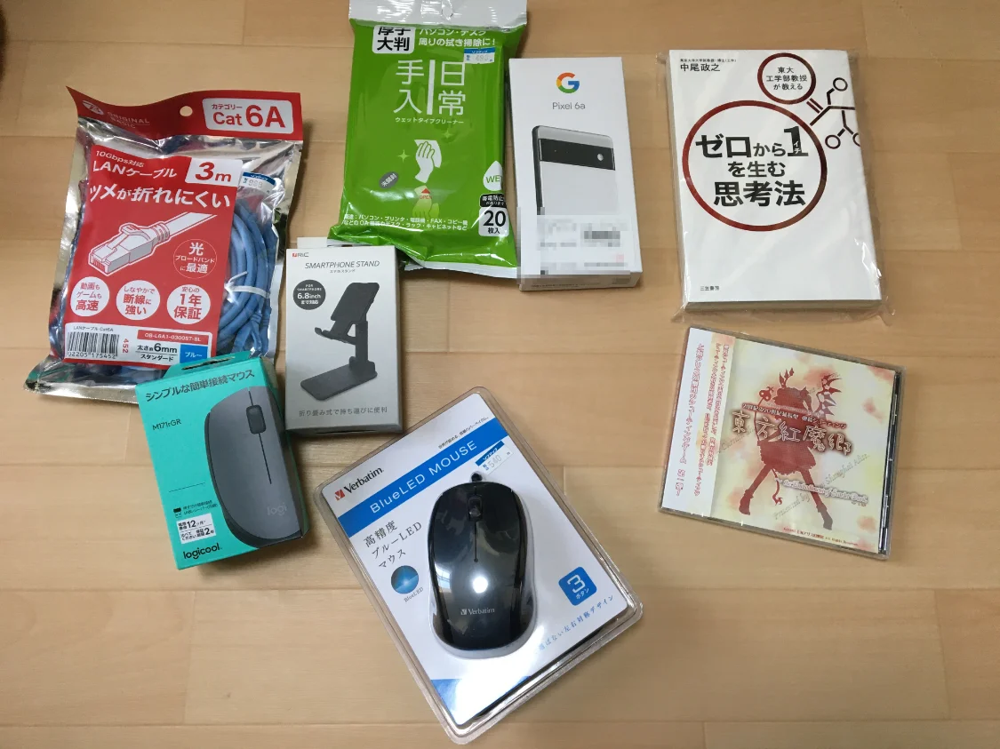
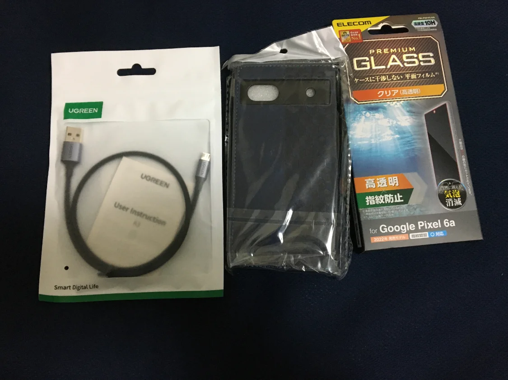
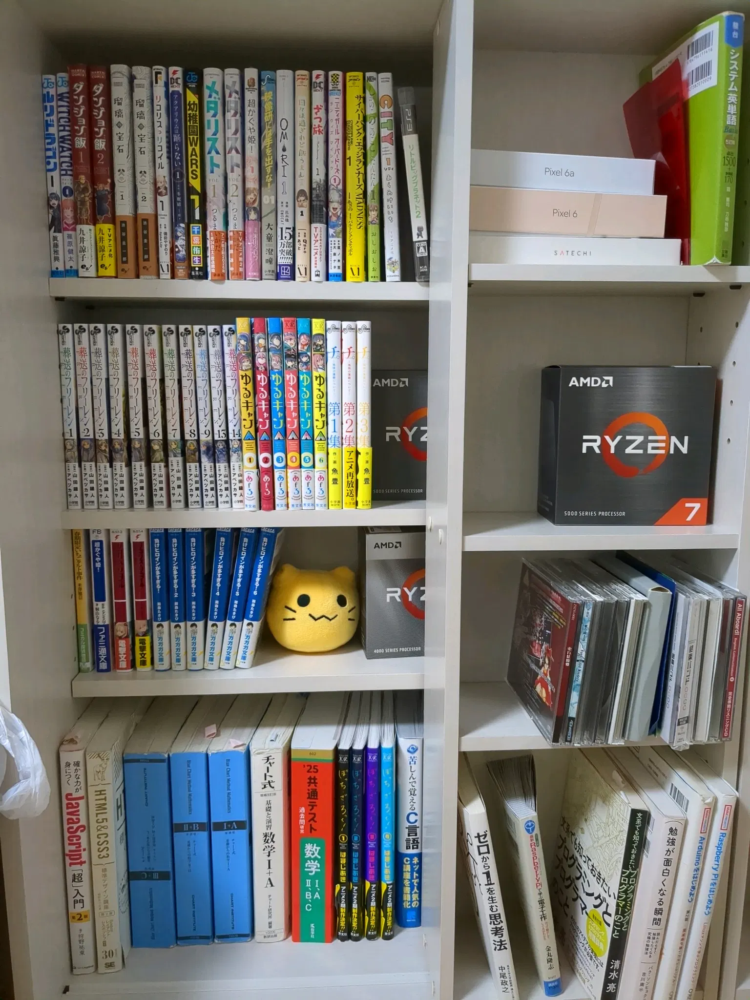
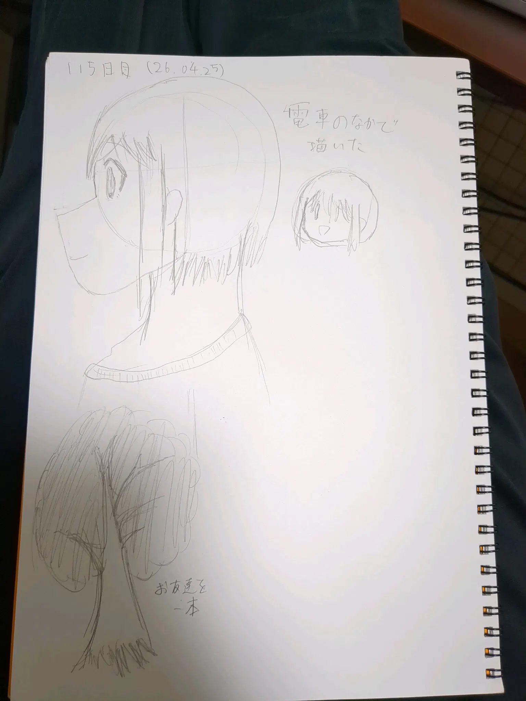
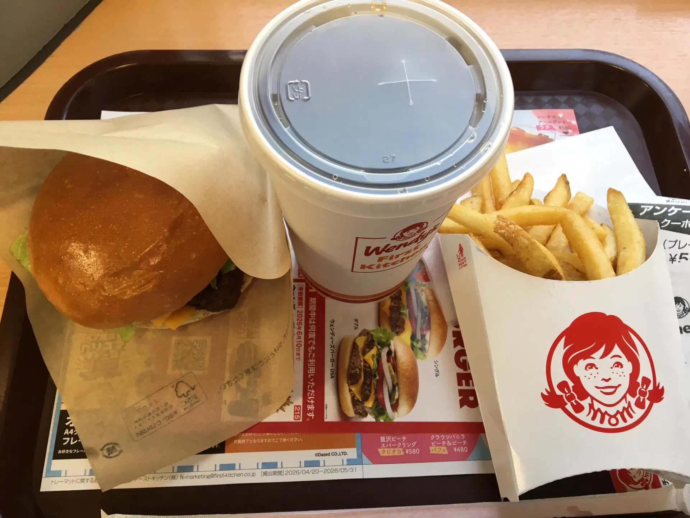
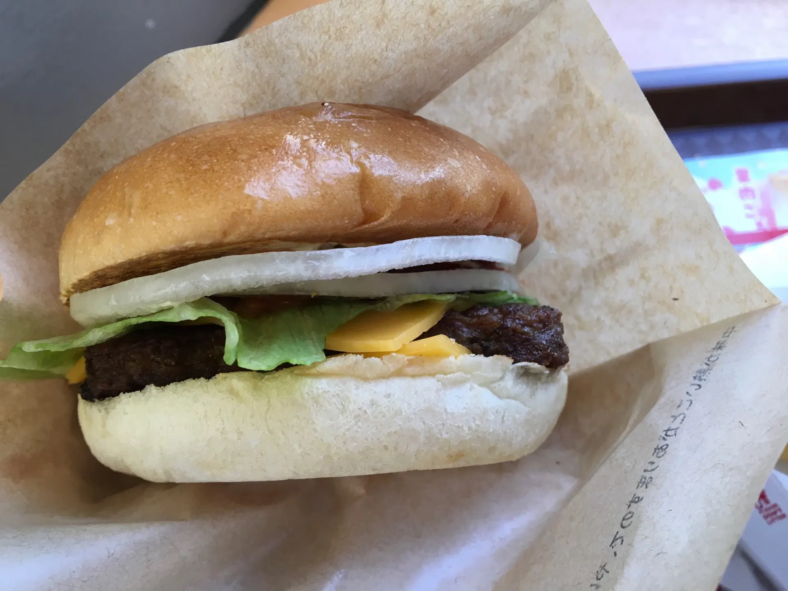
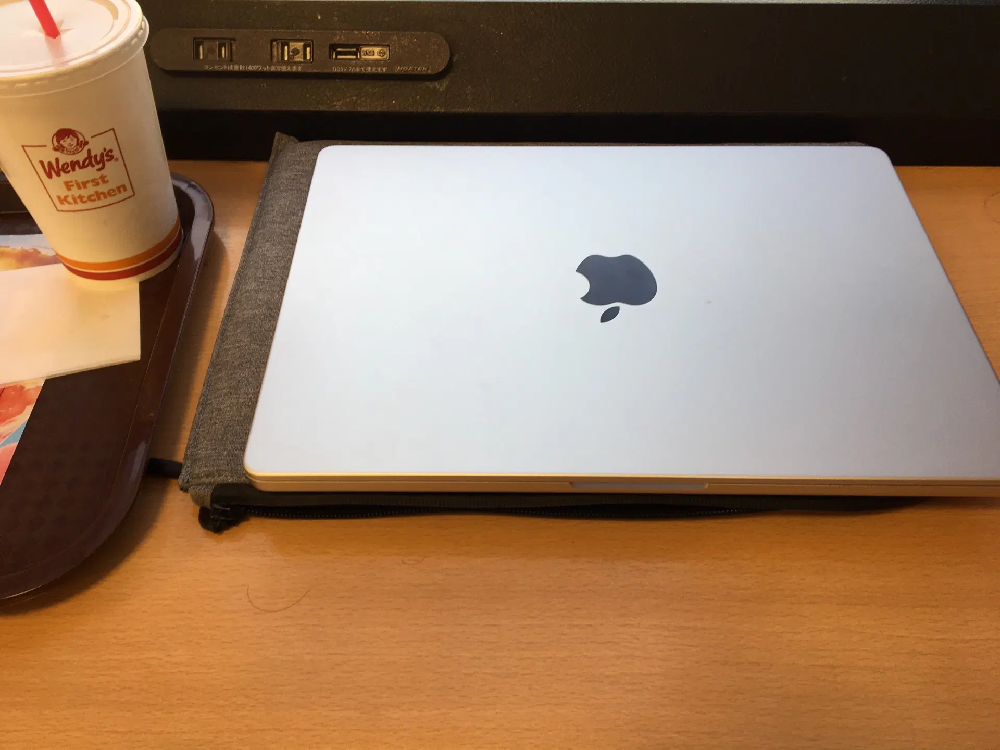

今日もまた大宮に出かけた
今日も久々に大宮に出かけてきました。そんで、目当てのものを買って、またいいもんを食ってきました。
その目当てのものとは…

Google Pixel 6aです。実は数ヶ月前にPixel 6を買ったのですが、バイト先で落として液晶を割ってしまい表示されなくなってしまうというアクシデントがあり、あえなく使用不可となってしまいました。
今回はそのようなことを起こさないように、事前にケースとガラスフィルムを購入しました。

フィルムはエレコム製、ケースはAmazonで売ってたなんかぁゃιぃやつです。
とりあえずこの程度万全であれば、安易に壊れたりはしないだろう、と。まあ、最近スマホはバイト先に持ち込んだりしていないのですが。
そういえば、MacBook Proは3年ぐらい使ってますが、いまだにフィルムをつけていません。しかもキーボードにも防塵シートをつけていません。画面もキーボードも汚いのでそろそろ欲しいです。
あと、本棚も買いました。これで当分の間は本の置き場所に困ることはありません。まあ文庫本と漫画限定なのですが。

脱〇〇のコーナー Link to heading
- 脱X 27日目
- 脱YouTube 0日目 （リセット、最高記録8日）
- 脱AI 0日目 （リセット）
Duck AIを使ってしまった。
勉強のコーナー Link to heading
毎日連続勉強 リセット。二度目のリセットです。。。
お絵描き、勉強、ブログ更新は少なくとも毎日更新すると決めていますが、急に増やすとどれかが蔑ろになってしまう。。。qqw3
プログラミングのコーナー Link to heading
今日こそ再開します！！！！！
お絵描きのコーナー Link to heading
114日目。

いろいろコーナー Link to heading
あれから36万…いや、5000兆年ぶりにファーストキッチンに行きました。


思えば今月はCoCo壱番屋にケンタッキーにと、いろいろ美味しいものを食べています。
あと、明日こそネトフリ契約して超かぐや姫を見ます！！あと最近ジョジョの奇妙な冒険に興味があります。
おまけ ファーストキッチンでMac
